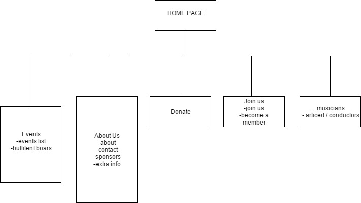

CP1406 - Assignment 2 - Project Plan
Names: Nick Barty (JC 463287) , Jacob Madeley (JC 429882)
Goals:
The goal is to update the existing look of the Barrier Reef Orchestra website to give it a more profecional look and feel to it so sponsors and future club members are more likely to join and donate, an increase in younger mebers joining as well as an increase of community intrest would also be benificial.
Success Evaluation:
The sucess of the website will be deturmined by the amount of members looking to join the orchestra, increase to dontions and an increase in ticket sales.
Target Audience:
The intended audiance for the site is younger people such as students to mid 20's but also to get the attention of potential benefactors that would be intrested in donateing to the Orchestra or to sponcer them. Another audience target wouldbe the comunnity and potential condutors and/or musicians to increase the Orchestras repitore and the community to attend their performances.
Site Flowchart:
Github repo name: Group-Assingment
Github repo URL: https://github.com/JacobMadeley/Group-Assingment